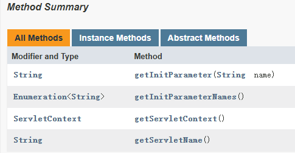
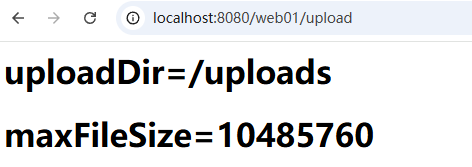
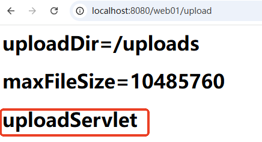
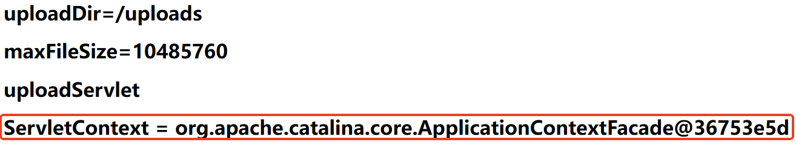

jakarta.servlet.ServletConfig。参考 Jakarta EE 10的 API 帮助文档。

接口由 Web 服务器实现。程序员只需要面向 ServletConfig 接口编程。
web.xml 文件中的配置信息会被 Web 服务器封装到 ServletConfig 对象中，例如以下配置信息：<servlet>
<servlet-name>uploadServlet</servlet-name>
<servlet-class>com.jkweilai.servlet.FileUploadServlet</servlet-class>
<!--这就是Servlet初始化参数，这些配置信息会被Web服务器自动封装到ServletConfig对象中-->
<init-param>
<param-name>uploadDir</param-name>
<param-value>/uploads</param-value>
</init-param>
<init-param>
<param-name>maxFileSize</param-name>
<param-value>10485760</param-value><!--最大10MB-->
</init-param>
</servlet>
<servlet-mapping>
<servlet-name>uploadServlet</servlet-name>
<url-pattern>/upload</url-pattern>
</servlet-mapping>
在 FileUploadServlet中调用以上两个方法即可获取初始化参数的配置信息：
package com.jkweilai.servlet;
import jakarta.servlet.*;
import java.io.IOException;
import java.io.PrintWriter;
import java.util.Enumeration;
public class FileUploadServlet extends GenericServlet {
@Override
public void service(ServletRequest request, ServletResponse response) throws ServletException, IOException {
response.setContentType("text/html;charset=UTF-8");
PrintWriter out = response.getWriter();
// 获取ServletConfig对象
ServletConfig servletConfig = this.getServletConfig();
// 获取初始化参数配置信息
Enumeration<String> initParameterNames = servletConfig.getInitParameterNames();
while (initParameterNames.hasMoreElements()) {
String initParameterName = initParameterNames.nextElement();
String initParameterValue = servletConfig.getInitParameter(initParameterName);
out.print("<h1>" + initParameterName + "=" + initParameterValue + "</h1>");
}
}
}
执行结果如下：

获取初始化参数的配置信息，可以通过以下两个方法：
// 通过初始化参数的name获取value
String getInitParameter(String name);
// 获取所有初始化参数的name
Enumeration<String> getInitParameterNames();
在 GenericServlet中有这样一段代码：
public class GenericServlet {
private transient ServletConfig config;
// ...
@Override
public ServletConfig getServletConfig() {
return config;
}
// ...
}
我们要编写的 Servlet 类都会继承 GenericServlet，因此都可以通过 getServletConfig()方法来获取 ServletConfig对象。
当然，我们也可以不获取 ServletConfig对象，直接调用 Servlet对象的 getInitParameterNames()和 getInitParameter(name)也是可以的，这是因为我们编写 Servlet 继承了 GenericServlet，在该类中提供了这两个方法，作为子类 Servlet 当然可以直接调用，请再次查看 GenericServlet 源码：
public class GenericServlet {
private transient ServletConfig config;
// ...
@Override
public ServletConfig getServletConfig() {
return config;
}
// 额外扩展的方法
@Override
public String getInitParameter(String name) {
return getServletConfig().getInitParameter(name);
}
// 额外扩展的方法
@Override
public Enumeration<String> getInitParameterNames() {
return getServletConfig().getInitParameterNames();
}
// ...
}
通过源码可以看到底层实际上调用的还是 ServletConfig对象的方法。因此代码可以修改为：
package com.jkweilai.servlet;
import jakarta.servlet.*;
import java.io.IOException;
import java.io.PrintWriter;
import java.util.Enumeration;
public class FileUploadServlet extends GenericServlet {
@Override
public void service(ServletRequest request, ServletResponse response) throws ServletException, IOException {
response.setContentType("text/html;charset=UTF-8");
PrintWriter out = response.getWriter();
// 获取初始化参数配置信息
Enumeration<String> initParameterNames = this.getInitParameterNames();
while (initParameterNames.hasMoreElements()) {
String initParameterName = initParameterNames.nextElement();
String initParameterValue = this.getInitParameter(initParameterName);
out.print("<h1>" + initParameterName + "=" + initParameterValue + "</h1>");
}
}
}
执行结果和之前一样。
String getServletName();
通过这个方法可以获取 <servlet-name>servletName</servlet-name>配置中的 servletName。
// 获取ServletName
ServletConfig servletConfig = this.getServletConfig();
String servletName = servletConfig.getServletName();
out.println("<h1>" + servletName + "</h1>");
运行结果如下：

同样，在 GenericServlet中也提供了这样一个方法，可以在不获取 ServletConfig对象时直接获取 ServletName，代码如下：
// 获取ServletName
String servletName = this.getServletName();
out.println("<h1>" + servletName + "</h1>");
运行效果和之前相同。
ServletContext getServletContext();
代码如下：
// 获取ServletContext对象
ServletConfig servletConfig = this.getServletConfig();
ServletContext application = servletConfig.getServletContext();
out.print("<h1>ServletContext = " + application + "</h1>");
执行结果如下：

同样，在 GenericServlet类也提供了这样一个方法，因此在不获取 ServletConfig 对象的前提下，直接获取 ServletContext 对象也是可以的，代码如下：
ServletContext application = this.getServletContext();
out.print("<h1>ServletContext = " + application + "</h1>");
运行结果和之前一样。